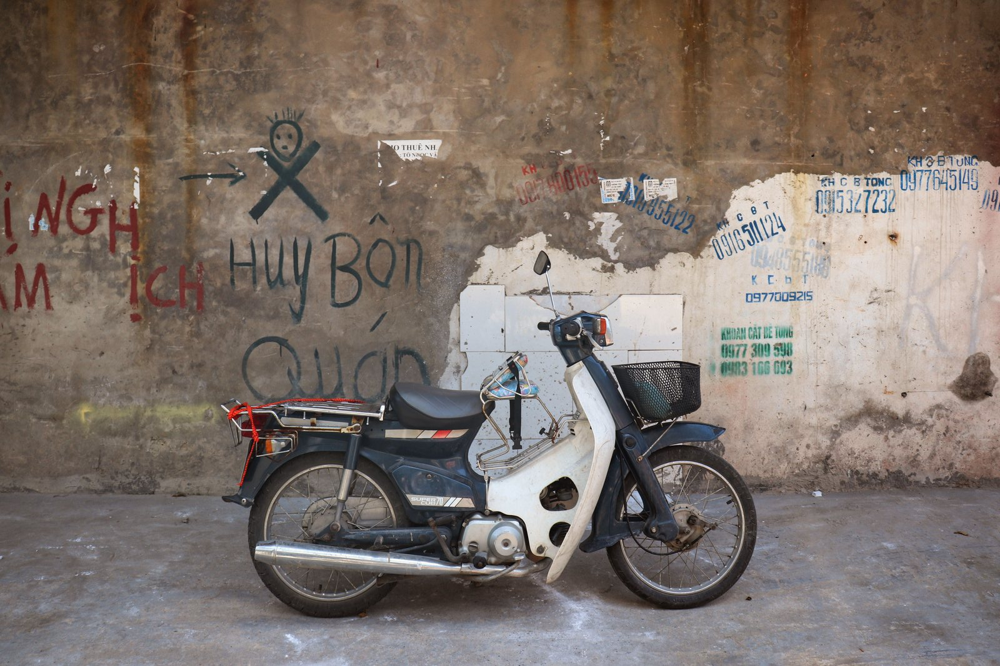
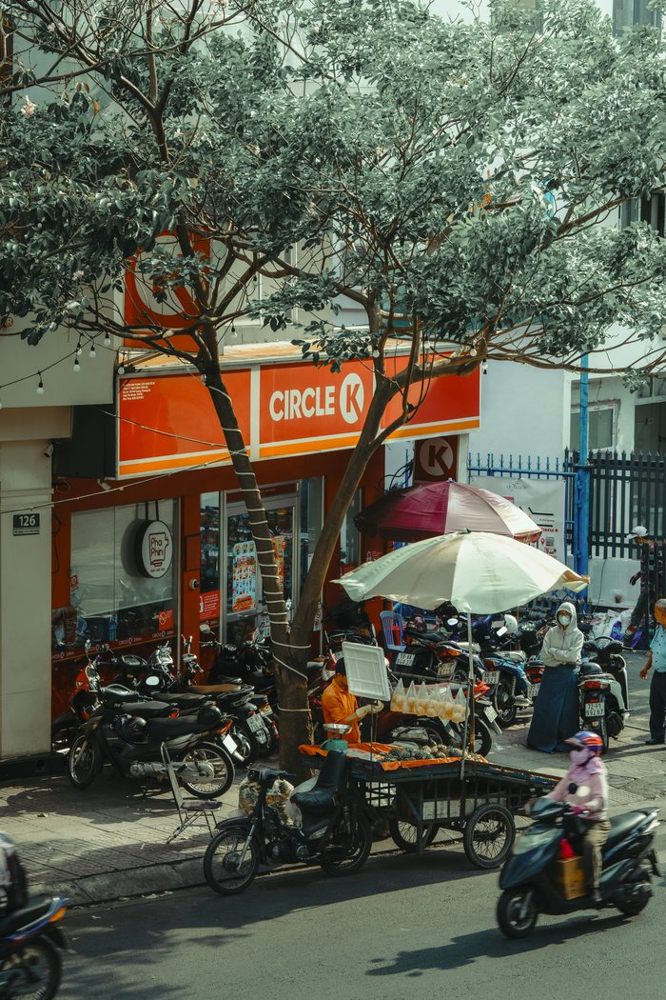
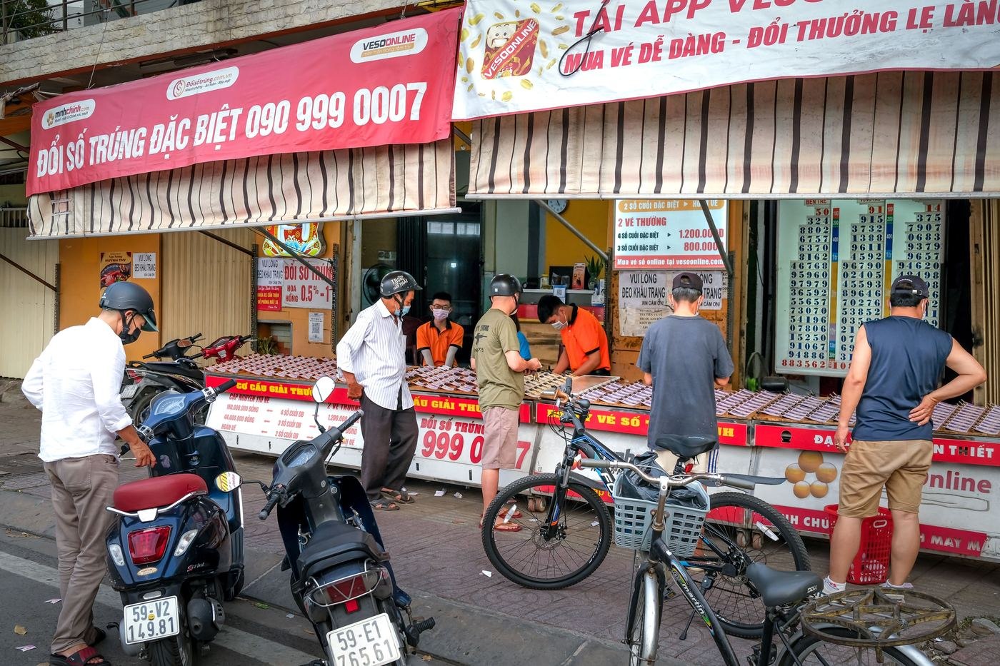

How to sell a 50cc bike in Nha Trang before leaving

People ask “what do I do with it when I leave” even before buying — and it's a fair question. A 50cc bike doesn't tie you to Vietnam forever: it's a vehicle locals buy every day. But it sells smoothly only when the papers are in order and you started preparing well before the last day before your flight.
To be clear right away: we don't buy bikes back and don't promise to. We sell ready bikes and don't take them back. This article is about selling a bike yourself, written so you understand how it works in advance.
It all starts with the papers
The main asset when reselling is not the looks but the Blue Card (cà vẹt). The buyer wants to see a real registration where the frame and engine numbers match, with the engine size and plate number. If the document is in hand and matches the bike, the conversation goes fast. If there's no document, it's “lost” or the data doesn't match — the bike becomes a problem locals avoid.
So the rule is simple: from day one keep the Blue Card in a dry place and carry a copy or photo with you. How to read the registration and check the engine size — how to confirm a real 50cc by the papers.
What price it sells for
No one can name an exact figure in advance: the resale price depends on the model, mileage, condition and, above all, the papers. A real benchmark comes only from comparison — see what similar bikes of the same class with the same type of papers are listed for right now. Not “sold” ones, but active listings in your city.
Two things that push the price down the most: unclear papers and signs of a crash. Two things that hold it: a clean Blue Card and the feeling that the bike was looked after.

Preparation: three days, not three hours
Before selling it's worth investing a little time and money — it pays back with interest:
- washing — including the plastic under the seat and the rims;
- oil, if it's been a long time since the last change: fresh oil is an argument you can hear;
- bulbs, brake light, indicators — a dead bulb reads as “nobody looked after this bike”;
- tyre pressure and a look at the tread;
- brakes — if the lever sinks or the pads squeal, it's the first thing noticed on a test ride.
Separately — photos. Shoot in daylight, in soft light, 8–12 shots: the whole bike from both sides, the dash with the mileage, the seat, the wheels, the lock and the Blue Card itself (better to cover the owner's name and address). Honest photos with small scratches work better than retouched ones: the person arrives and sees what they expected.
Where to find a buyer
There are only a few working channels, and they differ in speed and price:
- Vietnamese classifieds (the biggest is Chợ Tốt). The most buyers, but the chat is in Vietnamese and the haggling will be tougher.
- Russian- and English-speaking groups on Facebook and Telegram for Nha Trang. A smaller audience, but they understand you without a translator, and many long-stay visitors look exactly for a 50cc.
- Shops and workshops that buy bikes. The fastest option and the lowest price: they buy to resell.
- Word of mouth — neighbours, your landlord, friends. Often works faster than listings.
Start 2–3 weeks before you leave. In three days you can only sell to a shop, and only at a big discount.

How the handover works
The scheme considered normal in Vietnam:
- The buyer inspects the bike and takes a short ride.
- Both sides sign a sale contract. Local practice is to have it notarised; for a Vietnamese buyer this matters, because next they re-register the bike in their name.
- You hand over the original Blue Card, the keys (ideally both) and a copy of your passport/visa page if requested for the contract.
- You get the money before handing over the papers, not after.
Re-registration (sang tên) is done by the new owner — it's their step and their timing, and you don't need to take it on. We don't offer re-registration as a service either: we sell a bike with a clean Blue Card and a bike folder, and after that the papers are the buyer's business.
What not to do
- Don't hand over the papers “before payment” — not for “I'll show my wife”, not for “I'll go to the bank”.
- Don't leave the bike on consignment with a stranger without a written document: formally the bike is still yours.
- Don't let someone test-ride alone with the keys and papers. Don't take a passport as a deposit — ride along as a passenger or stay with the papers.
- Don't quietly sell “as is” if you know about a fault: a hidden defect almost always ends with a demand for a refund.
Why this matters when buying too
A bike's resale value is set the moment you buy it. A bike with an honest 50cc Blue Card, no signs of serious repairs and in working order sells; a “grey” bike without papers doesn't sell at any price. That's why we keep a filter when buying: how we select and prepare bikes. Along with the bike you get the papers and a bike folder.
Short conclusion
Selling a 50cc bike in Nha Trang means papers plus two weeks of time. Keep the Blue Card in order, get the bike looking good, post honest photos, look for a buyer in two or three channels at once and hand over the papers only after the money. Next it's worth reading about pre-sale preparation and the bike checklist — it works the same when you buy and when you sell.